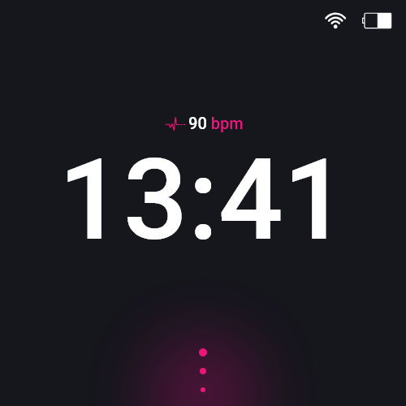
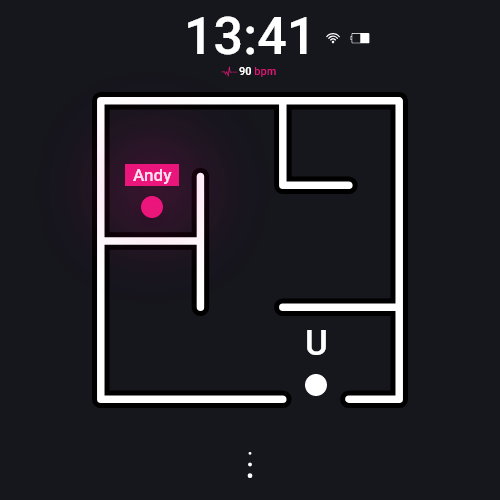

Smartwatch tegen depressie: Depressie komt bij zo’n 20% van de Nederlanders ooit voor in zijn of haar leven. Het contante gevoel dat het leven weinig nut heeft. Mensen die leiden aan depressie hebben vaak weinig tot geen sociaal contact, maar wat nou als een persoon met depressie meer sociaal contact zou kunnen krijgen?
Hierbij komt mijn wearable van pas. Uit onderzoek blijkt namelijk dat mensen die leiden aan depressie een onregelmatige hartslag hebben. Een hartslag is gemakkelijk te meten door een optische hartslagsensor te zetten op de smartwatch. De hartslag van de gebruiker wordt om het kwartier gemeten. Wanneer de gebruiker een onregelmatige hartslag heeft, dan zal het apparaat dit merken en op slaan op de telefoon van de persoon.
Mochten er andere mensen in dezelfde ruimte zijn met dezelfde smartwatch, dan worden deze smartwatches met elkaar verbonden. Zodra de smartwatch een signaal binnen krijgt dat een andere gebruiker in de kamer een onregelmatige hartslag heeft en dus mogelijk lijdt aan depressie, dan krijgt de gebruiker weer een signaal dat er iemand met depressie dichtbij is. De gebruiker ziet onderaan zijn smartwatch drie roze cirkels. Deze cirkels geven aan dat de gebruiker naar boven kan swipen om zo bij de plattegrond te komen. Op dit plattegrond wordt weergegeven doormiddel van een nabijheidssensor waar precies degene die lijdt aan depressie zich bevindt. Op die manier kan er een conversatie worden gestart en hopelijk een begin worden gemaakt aan het genezen van depressie.